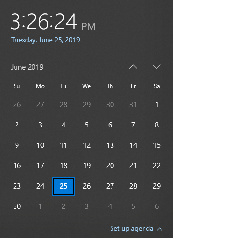
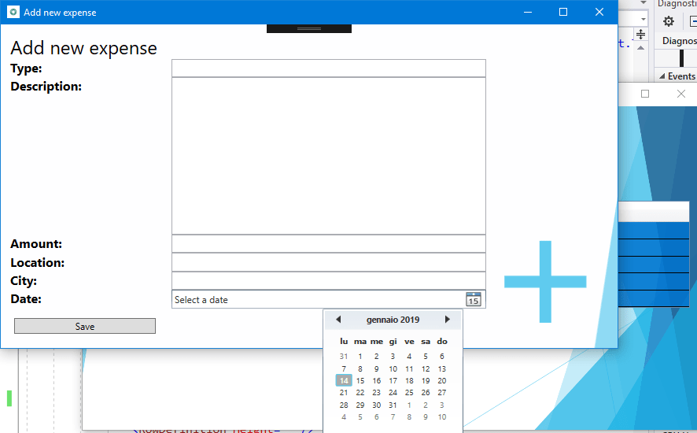
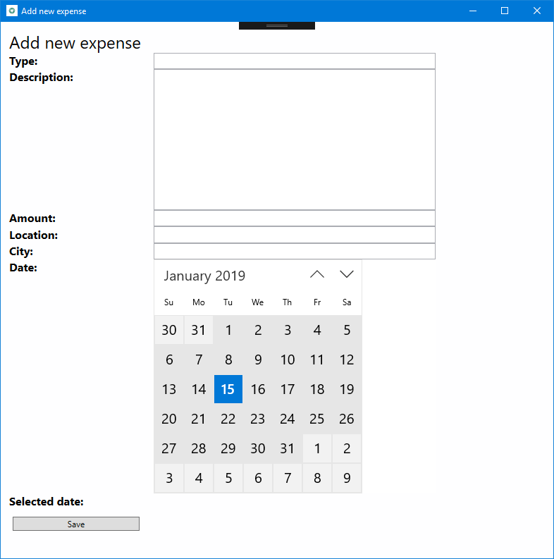

Part 3: Add a UWP CalendarView control using XAML Islands
This is the third part of a tutorial that demonstrates how to modernize a sample WPF desktop app named Contoso Expenses. For an overview of the tutorial, prerequisites, and instructions for downloading the sample app, see Tutorial: Modernize a WPF app. This article assumes you have already completed part 2.
In the fictional scenario of this tutorial, the Contoso development team wants to make it easier to choose the date for an expense report on a touch-enabled device. In this part of the tutorial, you will add a UWP CalendarView control to the app. This is the same control that is used in the Windows date and time functionality on the taskbar.

Unlike the InkCanvas control you added in part 2, the Windows Community Toolkit does not provide a wrapped version of the UWP CalendarView that can be used in WPF apps. As an alternative, you'll host an InkCanvas in the generic WindowsXamlHost control. You can use this control to host any first-party UWP control provided by the Windows SDK or WinUI library or any custom UWP control created by a third party. The WindowsXamlHost control is provided by the Microsoft.Toolkit.Wpf.UI.XamlHost package NuGet package. This package is included with the Microsoft.Toolkit.Wpf.UI.Controls NuGet package that you installed in part 2.
Note
This tutorial only demonstrates how to use WindowsXamlHost to host the first-party CalendarView control provided by the Windows SDK. For a walkthrough that demonstrates how to host a custom control, see Host a custom UWP control in a WPF app using XAML Islands.
In order to use the WindowsXamlHost control, you'll need to directly call WinRT APIs from code in the WPF app. The Microsoft.Windows.SDK.Contracts NuGet package contains the references necessary to enable you to call WinRT APIs from the app. This package is also included in the Microsoft.Toolkit.Wpf.UI.Controls NuGet package that you installed in part 2.
Add the WindowsXamlHost control
In Solution Explorer, expand the Views folder in the ContosoExpenses.Core project and double-click the AddNewExpense.xaml file. This is the form used to add a new expense to the list. Here is how it appears in the current version of the app.

The date picker control included in WPF is meant for traditional computers with mouse and keyboard. Choosing a date with a touch screen isn't really feasible, due to the small size of the control and the limited space between each day in the calendar.
At the top of the AddNewExpense.xaml file, add the following attribute to the Window element.
xmlns:xamlhost="clr-namespace:Microsoft.Toolkit.Wpf.UI.XamlHost;assembly=Microsoft.Toolkit.Wpf.UI.XamlHost"After adding this attribute, the Window element should now look like this.
<Window x:Class="ContosoExpenses.Views.AddNewExpense" xmlns="http://schemas.microsoft.com/winfx/2006/xaml/presentation" xmlns:x="http://schemas.microsoft.com/winfx/2006/xaml" xmlns:d="http://schemas.microsoft.com/expression/blend/2008" xmlns:mc="http://schemas.openxmlformats.org/markup-compatibility/2006" xmlns:xamlhost="clr-namespace:Microsoft.Toolkit.Wpf.UI.XamlHost;assembly=Microsoft.Toolkit.Wpf.UI.XamlHost" DataContext="{Binding Source={StaticResource ViewModelLocator},Path=AddNewExpenseViewModel}" xmlns:local="clr-namespace:ContosoExpenses" mc:Ignorable="d" Title="Add new expense" Height="450" Width="800" Background="{StaticResource AddNewExpenseBackground}">Change the Height attribute of the Window element from 450 to 800. This is needed because the UWP CalendarView control takes more space than the WPF date picker.
<Window x:Class="ContosoExpenses.Views.AddNewExpense" xmlns="http://schemas.microsoft.com/winfx/2006/xaml/presentation" xmlns:x="http://schemas.microsoft.com/winfx/2006/xaml" xmlns:d="http://schemas.microsoft.com/expression/blend/2008" xmlns:mc="http://schemas.openxmlformats.org/markup-compatibility/2006" xmlns:xamlhost="clr-namespace:Microsoft.Toolkit.Wpf.UI.XamlHost;assembly=Microsoft.Toolkit.Wpf.UI.XamlHost" DataContext="{Binding Source={StaticResource ViewModelLocator},Path=AddNewExpenseViewModel}" xmlns:local="clr-namespace:ContosoExpenses" mc:Ignorable="d" Title="Add new expense" Height="800" Width="800" Background="{StaticResource AddNewExpenseBackground}">Locate the
DatePickerelement near the bottom of the file, and replace this element with the following XAML.<xamlhost:WindowsXamlHost InitialTypeName="Windows.UI.Xaml.Controls.CalendarView" Grid.Column="1" Grid.Row="6" Margin="5, 0, 0, 0" x:Name="CalendarUwp" />This XAML adds the WindowsXamlHost control. The InitialTypeName property indicates the full name of the UWP control you want to host (in this case, Windows.UI.Xaml.Controls.CalendarView).
Press F5 to build and run the app in the debugger. Choose an employee from the list and then press the Add new expense button. Confirm that the following page hosts the new UWP CalendarView control.

Close the app.
Interact with the WindowsXamlHost control
Next, you'll update the app to process the selected date, display it on the screen, and populate the Expense object to save in the database.
The UWP CalendarView contains two members that are relevant for this scenario:
- The SelectedDates property contains the date selected by the user.
- The SelectedDatesChanged event is raised when the user selects a date.
However, the WindowsXamlHost control is a generic host control for any kind of UWP control. As such, it doesn't expose a property called SelectedDates or an event called SelectedDatesChanged, because they are specific of the CalendarView control. To access these members, you must write code that casts the WindowsXamlHost to the CalendarView type. The best place to do this is in response to the ChildChanged event of the WindowsXamlHost control, which is raised when the hosted control has been rendered.
In the AddNewExpense.xaml file, add an event handler for the ChildChanged event of the WindowsXamlHost control you added earlier. When you are done, the WindowsXamlHost element should look like this.
<xamlhost:WindowsXamlHost InitialTypeName="Windows.UI.Xaml.Controls.CalendarView" Grid.Column="1" Grid.Row="6" Margin="5, 0, 0, 0" x:Name="CalendarUwp" ChildChanged="CalendarUwp_ChildChanged" />In the same file, locate the Grid.RowDefinitions element of the main Grid. Add one more RowDefinition element with the Height equal to Auto at the end of the list of child elements. When you are done, the Grid.RowDefinitions element should look like this (there should now be 9 RowDefinition elements).
<Grid.RowDefinitions> <RowDefinition Height="Auto"/> <RowDefinition Height="Auto"/> <RowDefinition Height="Auto"/> <RowDefinition Height="Auto"/> <RowDefinition Height="Auto"/> <RowDefinition Height="Auto"/> <RowDefinition Height="Auto"/> <RowDefinition Height="Auto"/> <RowDefinition Height="Auto"/> </Grid.RowDefinitions>Add the following XAML after the WindowsXamlHost element and before the Button element near the end of the file.
<TextBlock Text="Selected date:" FontSize="16" FontWeight="Bold" Grid.Row="7" Grid.Column="0" /> <TextBlock Text="{Binding Path=Date}" FontSize="16" Grid.Row="7" Grid.Column="1" />Locate the Button element near the end of the file and change the Grid.Row property from 7 to 8. This shifts the button down one row in the grid because you added a new row.
<Button Content="Save" Grid.Row="8" Grid.Column="0" Command="{Binding Path=SaveExpenseCommand}" Margin="5, 12, 0, 0" HorizontalAlignment="Left" Width="180" />Open the AddNewExpense.xaml.cs code file.
Add the following statement to the top of the file.
using Microsoft.Toolkit.Wpf.UI.XamlHost;Add the following event handler to the
AddNewExpenseclass. This code implements the ChildChanged event of the WindowsXamlHost control you declared earlier in the XAML file.private void CalendarUwp_ChildChanged(object sender, System.EventArgs e) { WindowsXamlHost windowsXamlHost = (WindowsXamlHost)sender; Windows.UI.Xaml.Controls.CalendarView calendarView = (Windows.UI.Xaml.Controls.CalendarView)windowsXamlHost.Child; if (calendarView != null) { calendarView.SelectedDatesChanged += (obj, args) => { if (args.AddedDates.Count > 0) { Messenger.Default.Send<SelectedDateMessage>(new SelectedDateMessage(args.AddedDates[0].DateTime)); } }; } }This code uses the Child property of the WindowsXamlHost control to access the UWP CalendarView control. The code then subscribes to the SelectedDatesChanged event, which is triggered when the user selects a date from the calendar. This event handler passes the selected date to the ViewModel where the new Expense object is created and saved to the database. To do this, the code uses the messaging infrastructure provided by the MVVM Light NuGet package. The code sends a message called SelectedDateMessage to the ViewModel, which will receive it and set the Date property with the selected value. In this scenario the CalendarView control is configured for single selection mode, so the collection will contain only one element.
At this point, the project still won't compile because it is missing the implementation for the SelectedDateMessage class. The following steps implement this class.
In Solution Explorer, right-click the Messages folder and choose Add -> Class. Name the new class SelectedDateMessage and click Add.
Replace the contents of the SelectedDateMessage.cs code file with the following code. This code adds a using statement for the
GalaSoft.MvvmLight.Messagingnamespace (from the MVVM Light NuGet package), inherits from the MessageBase class, and adds DateTime property that is initialized through the public constructor. When you are done, the file should look like this.using GalaSoft.MvvmLight.Messaging; using System; namespace ContosoExpenses.Messages { public class SelectedDateMessage: MessageBase { public DateTime SelectedDate { get; set; } public SelectedDateMessage(DateTime selectedDate) { this.SelectedDate = selectedDate; } } }Next, you'll update the ViewModel to receive this message and populate the Date property of the ViewModel. In Solution Explorer, expand the ViewModels folder and open the AddNewExpenseViewModel.cs file.
Locate the public constructor for the
AddNewExpenseViewModelclass and add the following code to the end of the constructor. This code registers to receive the SelectedDateMessage, extract the selected date from it through the SelectedDate property, and we use it to set the Date property exposed by the ViewModel. Because this property is bound with the TextBlock control you added earlier, you can see the date selected by the user.Messenger.Default.Register<SelectedDateMessage>(this, message => { Date = message.SelectedDate; });When you are done, the
AddNewExpenseViewModelconstructor should look like this.public AddNewExpenseViewModel(IDatabaseService databaseService, IStorageService storageService) { this.databaseService = databaseService; this.storageService = storageService; Date = DateTime.Today; Messenger.Default.Register<SelectedDateMessage>(this, message => { Date = message.SelectedDate; }); }Note
The
SaveExpenseCommandmethod in the same code file does the work of saving the expenses to the database. This method uses the Date property to create the new Expense object. This property is now being populated by the CalendarView control through theSelectedDateMessagemessage you just created.Press F5 to build and run the app in the debugger. Choose one of the available employees and then click the Add new expense button. Complete all fields in the form and choose a date from the new CalendarView control. Confirm the selected date is displayed as a string below the control.
Press the Save button. The form will be closed and the new expense is added to the end of the list of expenses. The first column with the expense date should be the date you selected in the CalendarView control.
Next steps
At this point in the tutorial, you have successfully replaced a WPF date time control with the UWP CalendarView control, which supports touch and digital pens in addition to mouse and keyboard input. Although the Windows Community Toolkit doesn't provide a wrapped version of the UWP CalendarView control that can be used directly in a WPF app, you were able to host the control by using the generic WindowsXamlHost control.
You are now ready for Part 4: Add Windows user activities and notifications.